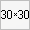

CSS свойство vertical-align выравнивает элемент по вертикали относительно своего родителя, окружающего текста или ячейки таблицы. Значение по умолчанию baseline, не наследуется, применяется к строчным и строчно-блочным элементам или ячейкам таблицы.
.elem {
vertical-align: baseline | bottom | middle | sub | super |
text-bottom | text-top | top | размер | проценты;
}| baseline | Выравнивает базовую линию блока по базовой линии родителя. Если у блока нет базовой линии, то за неё принимается нижняя граница. | ttext  h3 |
| bottom | Выравнивает нижний край элемента и его потомков с нижним краем строки. | ttexth3 |
| middle | Выравнивает вертикальную среднюю точку блока по базовой линии родительского блока плюс половина высоты буквы «x». | ttexth3 |
| sub | Опускает базовую линию блока вниз для создания нижнего индекса. Не оказывает влияние на размер текста. Выравнивает базовую линию элемента с базовой линией подстрочного индекса своего родителя. | ttexth3 |
| super | Поднимает базовую линию блока вверх для создания верхнего индекса. Выравнивает базовую линию элемента с базовой линией надстрочного индекса своего родителя. Не оказывает влияние на размер текста. | ttexth3 |
| text-bottom | Нижняя граница элемента выравнивается по нижнему краю содержимого родителя. Выравнивает нижний край элемента с нижним краем шрифта родительского элемента. | ttexth3 |
| text-top | Верхняя граница элемента выравнивается по верхнему краю содержимого родителя. Выравнивает верхний край элемента с верхним краем шрифта родительского элемента. | ttexth3 |
| top | Выравнивает верхний край элемента и его потомков с верхним краем строки. | ttexth3 |
| 15px размер |
Выравнивает базовую линию элемента относительно базовой линии родительского элемента со смещением на указанную величину. Допустимы отрицательные значения.
Если смещение указано в процентах, то оно вычисляется относительно значения свойства line-height. |
ttexth3 |
В качестве значения также можно использовать проценты, пиксели или другие доступные единицы. Положительное число смещает элемент вверх относительно базовой линии, в то время как отрицательное число опускает его вниз. При использовании процентов, отсчёт ведётся от значения свойства line-height, при этом 0% аналогично значению baseline.
| baseline | Выравнивает базовую линию ячейки с базовой линией первой текстовой строки или другого вложенного элемента. Выравнивают базовую линию ячейки с базовой линией всех остальных ячеек этой строки, которые выравнены относительно базовой линии.
Для следующих значение эффект аналогичен: sub, super, text-top, text-bottom и размер. |
| bottom | Выравнивает по нижнему краю ячейки. |
| middle | Выравнивает по середине ячейки. |
| top | Выравнивает содержимое ячейки по её верхнему краю. |